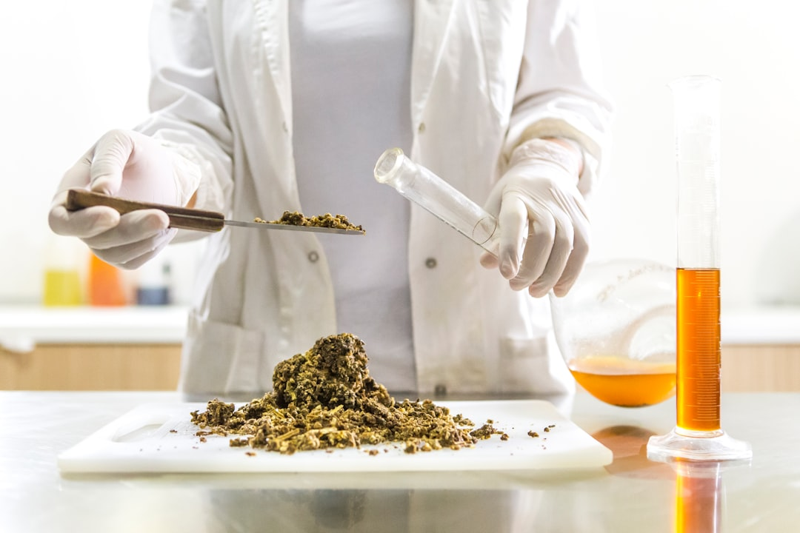

소부장 1700억 6개 분야 확대, 전략광물 회수 공정이 빠진 이유

산업통상자원부는 2025년 소부장 투자 지원 예산을 기존 대비 확대해 총 1700억 원 규모로 편성하고, 지원 분야를 반도체·배터리·디스플레이에서 방산·희토류·미래차를 포함한 6개 분야로 늘렸다. 중소·중견 기업의 설비 투자액 최대 50%까지 지원하는 것이 골자다.
그러나 이번 지원 세부 내역을 보면 소재 R&D 및 설비 구입 지원이 중심이고, 갈륨·게르마늄 등 전략광물의 회수·정제 전용 공정 설비에 대한 별도 트랙이 명시되지 않았다. 현재 고려아연·영풍이 자체 CAPEX로 추진하는 갈륨·게르마늄 정제 설비는 대기업 주도라 이 지원 대상에서도 사실상 제외된다.
이재명 대통령이 AI·반도체·데이터센터를 국가 전략 산업 삼각축으로 공식 선언하면서 소부장 정책의 방향성은 확립됐다. 그러나 전략 선언과 예산 배분 사이의 간극이 문제다. AI 데이터센터 가속화에 필요한 갈륨비소(GaAs) 기반 전력 반도체 소재, 고순도 실리콘카바이드(SiC) 기판 소재는 이번 6개 분야 어디에도 명시적으로 포함되지 않는다.
한국의 소부장 자급률은 반도체 핵심 소재 기준 2019년 약 50%에서 2024년 약 65% 수준으로 개선됐다(산업부 추정). 그러나 갈륨·게르마늄 등 전략광물 기반 소재의 국내 조달률은 여전히 5% 미만으로, 정책 성과가 전략광물 영역에선 거의 없었다는 의미다.
1700억 원은 절대 규모로는 크지 않다. 반도체 장비 1대 가격이 100억~500억 원인 현실을 감안하면, 이 예산으로 실질적인 공급망 내재화를 달성하기엔 한계가 있다. 6개 분야로 분산될 경우 분야당 평균 280억 원 수준으로, 설비 투자 50% 지원을 감안하면 실제 촉진 투자 규모는 분야당 560억 원에 불과하다.
진짜 문제는 지원 구조의 방향성이다. 소부장 정책이 '소재 개발 R&D → 설비 구매 보조' 프레임에 머무는 동안, 중국은 '채굴 → 제련 → 정제 → 수출 통제'를 수직 통합해 공급망 전체를 장악했다. 한국이 경쟁하려면 정제·회수 공정 전용 설비에 대한 집중 투자와 대기업 참여를 허용하는 구조 개편이 필요하다.
방산·희토류 분야 중소·중견 소재 기업이 이번 지원의 직접 수혜자다. 특히 희토류 영구자석 소재(네오디뮴·디스프로슘 합금)를 다루는 국내 업체들은 최대 50% 설비 지원을 통해 생산 라인 증설이 가능하다.
AI 서버·데이터센터 부품 공급 중소기업은 투자 지원 외에 정책 금융 연계(산업은행 AI·반도체 스타트업 15개사 육성 프로그램)까지 겹쳐 자금 조달 다변화 기회를 얻는다.
갈륨·게르마늄 전문 정제 스타트업은 이번 지원 체계에서 사각지대에 놓인다. 대기업(고려아연)은 지원 대상 아니고, 전용 스타트업은 실적·담보 부족으로 정책 금융 접근이 어렵다. 중간 규모의 정제 전문기업 육성 트랙이 없다는 것이 구조적 공백이다.
정책 선언과 예산 배분의 불일치로 인해 소부장 정책의 실효성에 대한 시장 신뢰가 낮아질 경우, 민간 CAPEX도 정부 매칭을 기다리며 집행을 늦추는 '대기 효과'가 발생할 수 있다. 실제로 일부 소재 기업 CFO들은 2025년 설비 투자를 정부 지원 확정 이후로 연기하는 결정을 내리고 있다.
소부장 중소·중견 기업은 6개 분야 중 어느 카테고리에 해당하는지를 먼저 명확히 확인하고, 희토류·방산 분야로의 사업 영역 재정의가 가능한지 검토하라. 정책 예산은 '분야 코드'가 맞아야 집행된다.
정부에 요구해야 할 정책 어젠다는 명확하다: 갈륨·게르마늄 전용 정제 설비에 대한 별도 지원 트랙 신설, 그리고 대기업 참여형 컨소시엄 지원 모델 도입이다. 현재 구조는 대기업은 스스로, 중소기업은 지원받는 이분법이지만 전략광물 정제는 대형 설비와 대규모 원료 조달이 필수라 중소기업 단독으로는 불가능하다.
실제 조달 현장에서는 — 정부 지원을 기다리다 소재 조달 타이밍을 놓친 사례를 수없이 봤다. 소재 스팟 가격은 정책 발표를 기다려주지 않는다. 지원 확정 여부와 무관하게 핵심 소재의 6개월치 재고 확보와 장기 공급 계약 협상을 병행하는 것이 실무에서 살아남는 방식이다.
이 포스팅은 쿠팡 파트너스 활동의 일환으로 수수료를 제공받습니다.